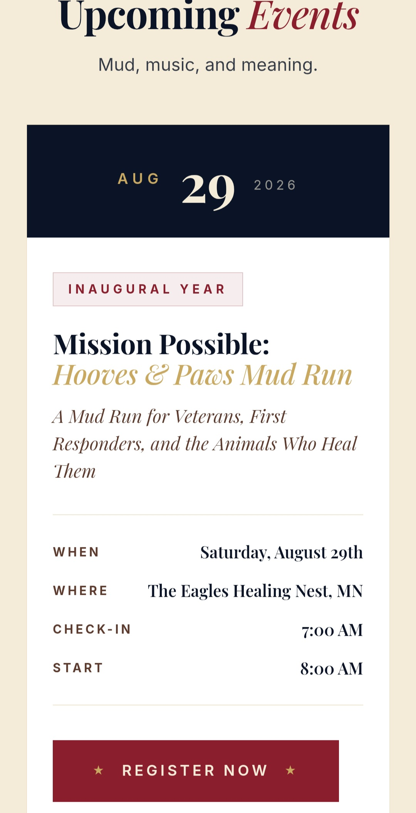
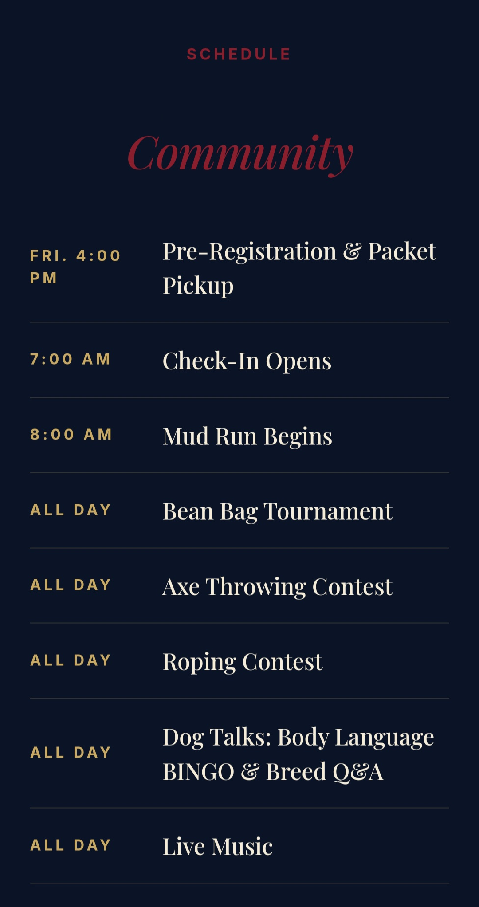
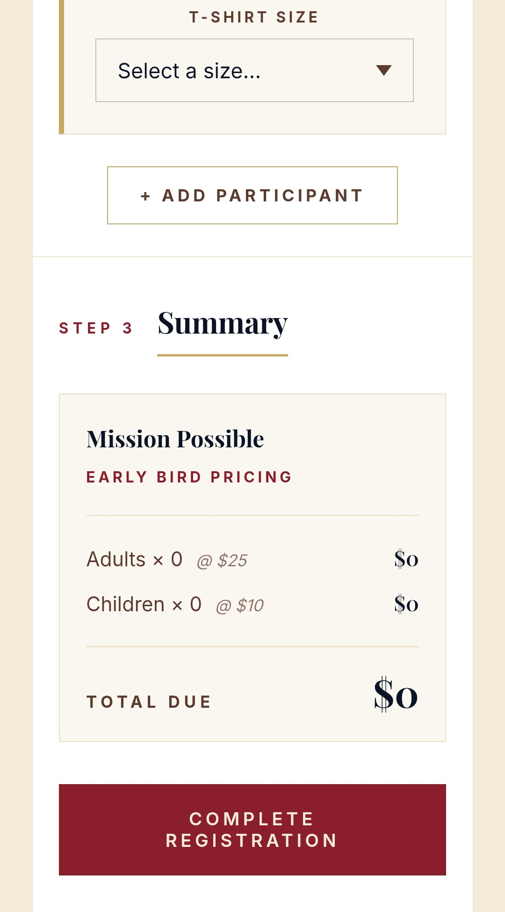

Live Client · Nonprofit Event
Mission Possible Hooves & Paws
The Problem
Mission Possible Hooves & Paws needed a digital presence that could represent a high-impact nonprofit event connecting Guardian 4 Heroes and Heroes K9 Odyssey Academy. The site needed to communicate urgency, mission, and professionalism — and get attention fast.
The Build
A fully custom hand-coded site built for speed and clarity. Event schedule, mission information, and a backend admin capability — all deployed on GitHub Pages with zero framework overhead. Mobile-first, fast-loading, and clean on every device.
The Result
The site is live and gaining significant attention. The nonprofit's digital presence now matches the weight of their mission. Built from scratch — no templates, no shortcuts.


